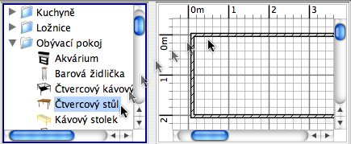

| Přidávání nábytku | |||
Nábytek vložíte do projektu jednoduchým chycením a přetažením jednoho nebo více kusů nábytku z katalogu do plánu projektu nebo do seznamu nábytku.  Také můžete označit zvolené kusy nábytku v katalogu a poté použít nabídku Nábytek > Přidat do projektu nebo kliknout na ikonu Přidat do projektu.
Když přetáhnete nábytek do plánu, pozice jejich horního levého rohu je v místě, kde jste pustili tlačítko myši. Kusy nábytku vložené do projektu jsou zároveň znázorněny v seznamu nábytku, v plánu a v 3D náhledu. V průběhu načítání 3D modelů se nábytek v 3D náhledu zobrazuje jako bílý obdélník. |
|